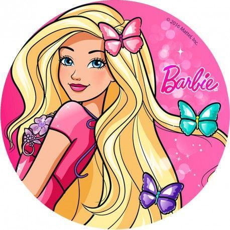

Barbie é uma boneca utilizada como brinquedo infantil, criada pela empresa americana Mattel em 9 de março de 1959. Ela foi criada pela empresária Ruth Handler e foi baseada na boneca alemã Bild Lilli, que mais tarde foi comprada pela Mattel.
Barbie: Life in the Dreamhouse é uma série de animação computadorizada (CGI) de comédia baseada na famosa boneca Barbie pela Mattel, produzida pela Arc Productions, Mattel e Nelvana.
novo parágrafo:
Ingrid é evangélica

Link para saber mais:
fã clube barbie